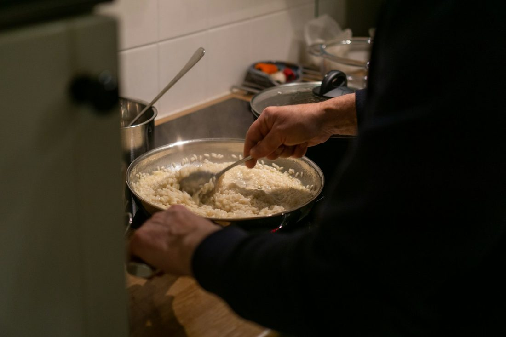
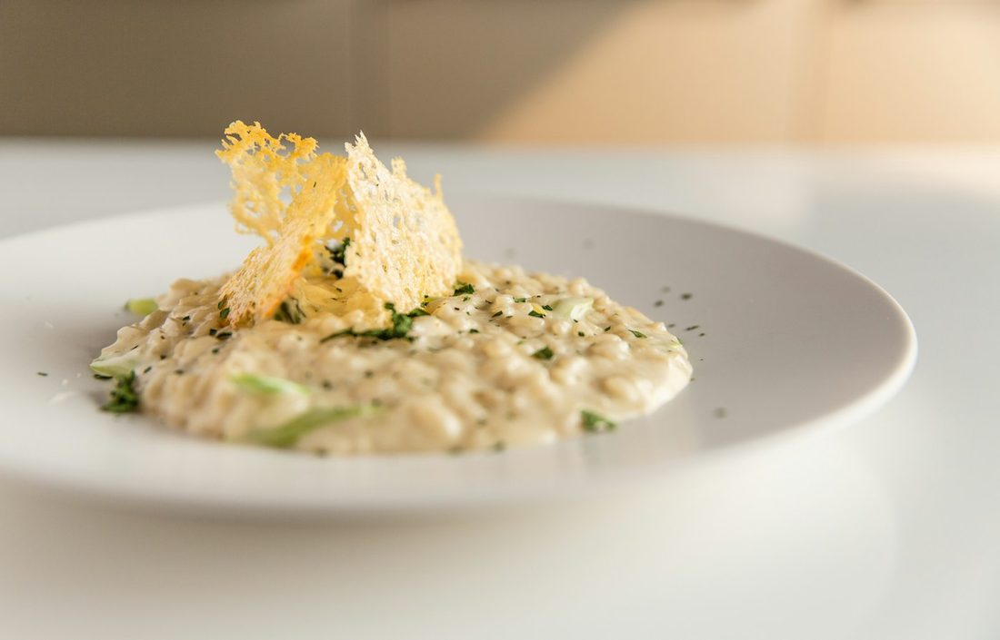
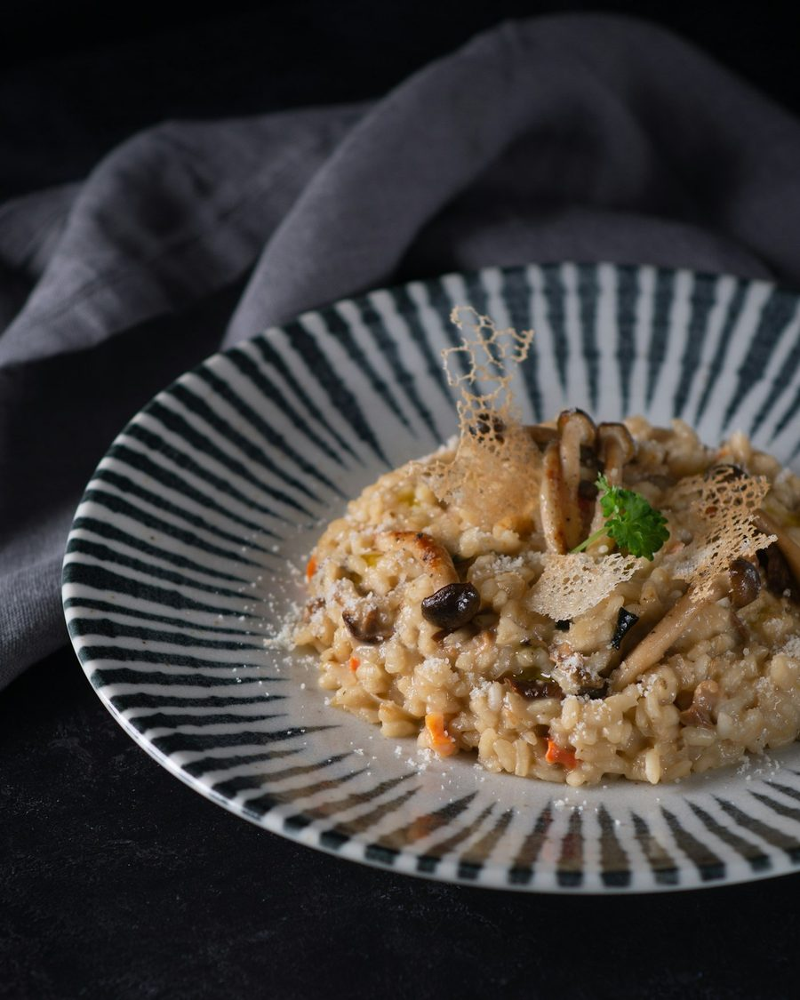

Parmesão e limão siciliano
Leve, perfumado e elegante.
Os chefs Jackson e Camila Cassilha cozinham ao vivo para até 60 convidados na Grande Florianópolis.



Risoto não espera. Por isso finalizamos cada panela durante a festa, e seus convidados recebem o prato cremoso e quente.
Você recebe, a gente cuida do fogão.
Sabores escolhidos para o seu público.
Técnica de restaurante e carinho de casa.
Escolha um ou mais sabores. Montamos o cardápio de acordo com o seu evento.
Leve, perfumado e elegante.

Cogumelos e aroma intenso.

A cara da ilha.

Cremoso e acolhedor.
Também fazemos alho-poró, damasco com amêndoas e outros sabores sob consulta.
Data, local e número de convidados.
Montamos o cardápio juntos.
Orçamento aprovado, agenda reservada.
Cozinhamos e servimos ao vivo.
“Cozinheiros excelentes e pessoas agradabilíssimas, uma rara combinação maravilhosa.”
Pedro F. · cliente
“Risoto perfeito! O de alho-poró é o meu preferido.”
“Os melhores. Vou organizar um evento só pra chamar vocês.”
“Super indico, eles são maravilhosos.”
Jackson e Camila são casal dentro e fora da cozinha. Ela é chef, Natural Chef e estudante de Nutrição. Juntos, levam para cada evento a técnica de quem vive a gastronomia há dez anos.
@chefcamilacassilha
Preencha e envie direto para o nosso WhatsApp. Respondemos com um orçamento personalizado.